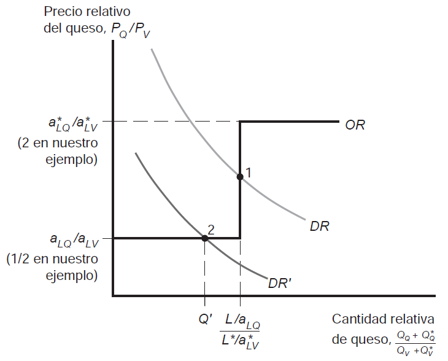

U2. Productividad del trabajo y ventaja comparativa. El modelo ricardiano
| Pais | Rosas (mill) | Computadores (mil) |
|---|---|---|
| EEUU | -10 | +100 |
| Argentina | +10 | -30 |
| Total | 0 | +70 |
Un país tiene una ventaja comparativa en la producción de un bien si el costo de oportunidad en la producción de este bien en términos de otros bienes es menor que el del otro país
\[\begin{align} \textrm{El país producirá:} \begin{cases} Q & si \quad \frac{P_{Q}}{P_{V}} > \frac{a_{LQ}}{a_{LV}} \\ Q \quad y \quad V & si \quad \frac{P_{Q}}{P_{V}} = \frac{a_{LQ}}{a_{LV}} \\ V & si \quad \frac{P_{Q}}{P_{V}} < \frac{a_{LQ}}{a_{LV}} \\ \end{cases} \end{align}\]
La economía se especializará en la producción de \(Q\) si \(\frac{P_{Q}}{P_{V}}\) –el precio relativo del \(Q\) es mayor que su costo de oportunidad; y se especializará en la producción de \(V\) si \(\frac{P_{Q}}{P_{V}}\) es menor que su costo de oportunidad en términos de vino
Si no existe comercio internacional, el precio relativo de los bienes es igual a la relación de sus requerimientos unitarios de trabajo –es decir una teoría de determinación de precios según el contenido de trabajo!
Ventaja comparativa y ventaja absoluta. Si un país puede producir una unidad de un bien con menos trabajo que otro, se dice que tiene una ventaja absoluta en la producción de ese bien. Comparando los requerimientos unitarios de producción entre ambos países, sólo podemos decir si una país tiene ventaba absoluta o no; para afirmar que un país tiene ventaja comparativa en la producción de algún bien necesitamos contar con los 4 (cuatro) requerimientos de trabajo

Implicancia. Esta convergencia en precios desde los precios de autarquía a precios de comercio tiene por efecto la especialización de cada país en el bien en el que tiene un requerimiento de trabajo relativamente menor.
El caso de Babe Ruth. Considerado el mejor beisbolista de la historia, Babe Ruth pasó a la fama como bateador y no como lanzador. Originalmente, cumplia ambas funciones pero por las características del juego no podía lanzar en todos los partidos. Eventualmente, su equipo decidió usarlo casi exclusivamente como bateador –su habilidad comparada en esta tarea comparada con sus compañeros era aún mayor que como lanzador- y los “beneficios de la especialización” pronto se vieron: no paró de batir records de home runs y convirtió a los Yankees en el equipo más popular de la historia
| Bien | \(a_{Li}\) | \(a*_{Li}\) | \((a*_{Li}/a_{Li})\) |
|---|---|---|---|
| Manzanas | 1 | 10 | 10 |
| Plátanos | 5 | 40 | 8 |
| Caviar | 3 | 12 | 4 |
| Dátiles | 6 | 12 | 2 |
| Enchiladas | 12 | 9 | 0.75 |
Idea central. Nuestro país tendrá ventaja en el costo en los bienes para los que su productividad relativa sea mayor que su salario relativo y el extranjero tendrá ventaja en los demás
| Sector | Prod. per capita BAN (% China) | X BAN (% China) |
|---|---|---|
| Todas | 28.5 | 1.0 |
| Textiles | 77 | 15.5 |